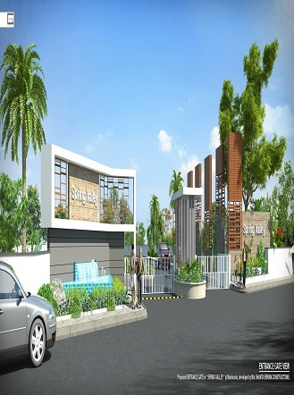
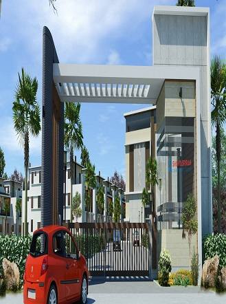
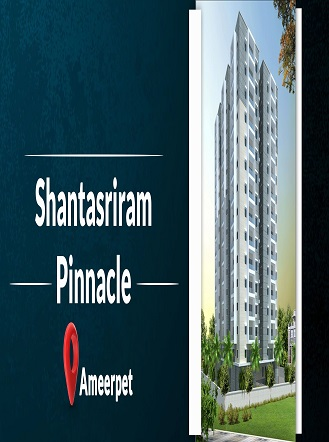
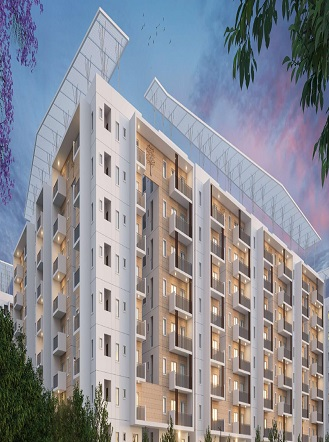
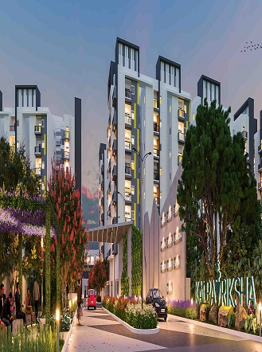

SHANATA SRIRAM
CONSTRUCTION

Shanta Sriram Constructions (P) LTD was incorporated in the year 1995 under the able guidance of the chief promoters and directors of the Company, Mr. M. Narsaiah and Mr. M. Lingaiah. We are renowned for our superiority in the fields of quality constructions and locations. Our credibility in this field is evident from the number of successful projects handled by us in the past decades. Ours is a company with ideals. Ideals which have shaped our journey and given us impetus to work towards being acknowledged as the most credible company in this business. Our constant endeavors are aimed at providing best quality living to all strata of the society without any compromise on quality.In addition to high flying constructions for the elite, we are also into construction of affordable and visually charming homes complete with all conveniences.Professional Senior Management Team and a well or ganised set up.A Clean Track record of delivering quality products within committed time lines
    CONTACT
SHANATA SRIRAM
sales@shantasriram.com
040-45656500
2023NAVEEN